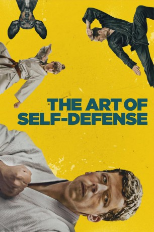
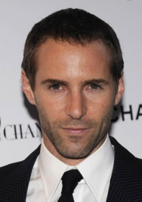

#12033 The Art of Self-Defense
 
 IMDB-Wertung: 6.7 / 10
IMDB-Wertung: 6.7 / 10  Tomatometer: 84
Tomatometer: 84  Metascore: 65
Metascore: 65 
Casey (Jesse Eisenberg) wird mitten auf der Straße willkürlich angegriffen. Er will sich erst eine Waffe kaufen, doch dann meldet sich er bei einem lokalen Dojo, also einer Übungshalle für japanische Kampfkünste, an. Der charismatische, aber dennoch mysteriöse Anführer der Gruppe nennt sich Sensei (Alessandro Nivola) und lehrt seinen Schülern die Kunst der Selbstverteidigung auf eher eigenwillige Weise. Casey wird schnell von seinem "Meister" inspiriert, wird immer selbstbewusster und will sogar bald seine Angreifer von einst aufspüren und sich ihnen stellen.
Jahr: 2019
Dauer: 104 Minuten
FSK: 16
Land: USA Studio: Bleecker Street MediaTonspuren: DD5.1 - ,
Untertitel: Deutsch,
Auflösung: 1080p (1920x1040) Größe: 9226 MB
Genre: Thriller, Drama, Komödie, Krimi, Mystery, Sport
Regisseur: Riley Stearns
Drehbuch: Riley Stearns
Soundtrack: Heather McIntosh
Darsteller:
 Jesse Eisenberg als Casey
Jesse Eisenberg als Casey-  Alessandro Nivola als Sensei
 Imogen Poots als Anna
Imogen Poots als Anna Steve Terada als Thomas
Steve Terada als Thomas- Phillip Andre Botello als Kennith
- Caroline Amiguet als French Audio Instructor
- Apollo Bacala als Karate Day Class Student
- Hauke Bahr als Grant
- Jason Burkey als Alex
- Justin Eaton als Lone Man
- Dallas Edwards als Manny
- Josh Fadem als Serial Killer
- John French als Office Worker
- Elizabeth Howlett als Girl in Hospital Room
- Nicholas Hulstine als Pickup Truck Driver
- Davey Johnson als Gun Store Owner
- Chris Lay als Karate Student
- Katherine Martin als Bakery Woman
- Cameron Murphy als New White Belt
 Leland Orser als Detective McCallister
Leland Orser als Detective McCallister- C.J. Rush als Other Steve
- Gina Fountain Schneider als Mom in Car
- Molly E. Schneider als Daughter in Car
- Katherine Smith-Rodden als Grocery Store Cashier
- Frederic Spitz als French Guy
- David Zellner als Henry
- Will Ellis Jr. als Night Class Student
- Darren Gaebel als Karate Night Class Student
- Scott Goodman als Drunk Skinny Guy
- Alex Haydon als Man Wearing Pants
- Kinsley Ramey als Martial Arts Student
- Matthew T. Schneider als Son in Car
- Sarah Beth Shapiro als Answering Machine
- Daniel H. Shoemaker als Karate Class Day Student
- Louis Robert Thompson als Veterinarian
Datei: X:\2019(A-F)\Art of Self-Defense, The (2019, FSK16, 1920x1040).mkv seit 16.11.2019
Festplatte: HD 2018(G-Z)-2019(A-Z)
 Es gibt insgesamt 60 Filme in der Gruppe '2019(A-F)'
Es gibt insgesamt 60 Filme in der Gruppe '2019(A-F)'